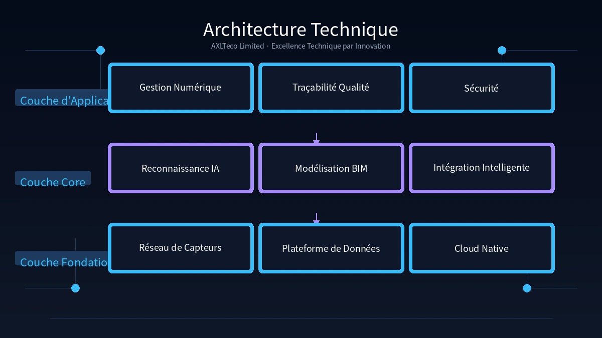

Présentation de l'entreprise

AXLTeco Limited est une filiale professionnelle de Shenzhen Anxinlian, spécialisée dans l'ingénierie de l'intelligence du bâtiment et des systèmes à courants faibles (ELV) à l'international. En 2024, l'entreprise a officiellement établi sa présence outre-mer au Nigeria. En s'appuyant sur l'expertise chinoise en gestion de projets et sur des technologies avancées, AXLTeco s'engage à fournir des solutions intelligentes fiables et de haute qualité au marché africain.
Principaux secteurs d'intervention :
- Bâtiments gouvernementaux
- Complexes commerciaux
- Établissements de santé
- Parcs industriels
- Infrastructures
- Établissements d'enseignement
Activités principales

Un service intégré de bout en bout couvrant le conseil, la conception, l'approvisionnement, la construction, la mise en service et l'exploitation/maintenance.
| Domaine d'activité | Composition des systèmes |
|---|---|
| Systèmes de sûreté et sécurité | Système de Vidéosurveillance, gestion de stationnement, contrôle d'accès & cartes multi-services, alarme intrusion |
| Systèmes de contrôle intelligent | Gestion Technique du Bâtiment (GTB/BAS), Système de Sécurité Incendie (SSI/FAS), éclairage intelligent, gestion de l'énergie |
| Réseaux de communication | Câblage structuré, CATV, réseaux LAN/WAN, couverture sans fil |
| Infrastructure | Centre de données et salles serveurs, systèmes de conférence, sonorisation publique, protection contre la foudre & mise à la terre |
Modèle de service
Double motorisation : « Technologie chinoise + Service local ».
- Conception de solutions et R&D technologique
- Études d'exécution détaillées et modélisation BIM
- Support technique à distance et expertise-conseil
- Intégration de la chaîne d'approvisionnement et sélection d'équipements
- Gestion de chantier et installation sur site
- Réponse rapide localisée et service après-vente
- Mise en service et intégration de systèmes sur site
- Développement des talents locaux et transfert de technologies
Expérience de projets

Partenaire stratégique majeur de China Civil Engineering Construction Corporation (CCECC), AXLTeco a participé en profondeur à la construction de plusieurs projets nationaux de référence au Nigeria. Grâce à une expertise technique pointue et à une gestion rigoureuse des projets, nous garantissons la livraison irréprochable de chaque système intelligent.
Projets de référence :
Force technique

Le « Système de Gestion de Chantier Intelligent du Projet FIRS de Lagos », conçu et mis en œuvre par AXLTeco, a reçu le Premier Prix du Prix de la Science et de la Technologie décerné par le Ministère du Logement et du Développement Urbain et Rural de Chine, ouvrant la voie aux normes de l'industrie par l'innovation technologique.
Gestion Numérique
Surveillance en temps réel de l'avancement et de l'allocation des ressources grâce à des outils numériques pour un contrôle affiné.
Sécurité
Intégration de la reconnaissance IA et des capteurs pour identifier proactivement les risques sur site et garantir la sécurité.
Traçabilité Qualité
Traçabilité des données de bout en bout garantissant que chaque étape respecte les spécifications techniques de haut niveau.
Vision & Mission

Mission : Connecter la Technologie Chinoise, Servir la Construction Africaine
Faire progresser l'intelligence du bâtiment par une expertise d'ingénierie professionnelle, en apportant le savoir-faire chinois, les normes chinoises et un service localisé au développement des infrastructures africaines.
Vision : Devenir le partenaire de confiance de l'Afrique en intelligence du bâtiment et intégration de systèmes à courants faibles.
Ancré au Nigeria, au service de l'Afrique de l'Ouest et de tout le continent — créer un avenir plus intelligent avec nos clients.
Stratégie : Centrée sur le Nigeria, expansion progressive en Afrique de l'Ouest et sur le continent. Amélioration continue des capacités de conception, de construction et d'intégration pour construire une marque intelligente compétitive à l'échelle internationale.
Manifeste de Marque
Nous croyons que chaque bâtiment mérite l'intelligence, et que chaque projet porte une responsabilité.
AXLTeco fait de la qualité d'ingénierie son fondement, de l'innovation technologique son moteur et de la valeur client sa boussole. En intégrant les technologies avancées chinoises d'intelligence du bâtiment et l'expérience de gestion d'ingénierie mature avec les besoins du marché africain, nous créons pour nos clients des environnements de bâtiments intelligents sûrs, fiables, efficaces et durables.
Nous ne construisons pas seulement des systèmes — nous construisons la confiance
Nous ne livrons pas seulement des projets — nous créons une valeur durable
Qualité d'ingénierie comme fondement · Innovation technologique comme moteur · Valeur client comme guide
Contact
Bureau
Lagos, Nigéria
Siège social
Shenzhen Anxinlian Technology Co., Ltd.